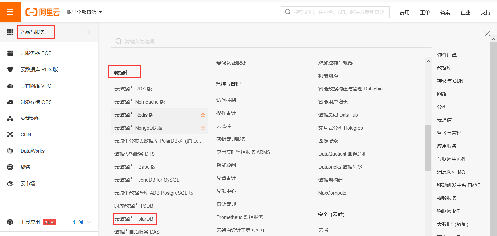

PolarDB和ECS搭建门户网站
使用PolarDB和ECS搭建门户网站
PolarDB简介
PolarDB是阿里云自研的下一代关系型云数据库，有三个独立的引擎，分别可以100%兼容MySQL、100%兼容PostgreSQL、高度兼容Oracle语法，存储容量最高可达100TB，单库最多可扩展到16个节点，适用于企业多样化的数据库应用场景。
PolarDB采用存储和计算分离的架构，所有计算节点共享一份数据，提供分钟级的配置升降级、秒级的故障恢复、全局数据一致性和免费的数据备份容灾服务。PolarDB既融合了商业数据库稳定可靠、高性能、可扩展的特征，又具有开源云数据库简单开放、自我迭代的优势，例如PolarDB MySQL性能最高可以提升至MySQL的6倍，而成本只有商用数据库的1/10。集群架构，计算与存储分离。
开通、连接资源
PolarDB免费上手体验。
- 单击免费开通创建所需资源。
- 连接服务器。使用
CMD、Powershell、Xshell等工具都可以。
创建PolarDB数据库账号
- 单击页面左侧云产品资源下的一键复制登录url 。
- 在浏览器中打开，使用RAM用户 登录。
- 在 阿里云控制台首页 左侧导航栏，依次单击 产品与服务 > 云数据库PolarDB ，进入 云数据库PolarDB管理控制台 。

- 单击左侧 集群列表 ，然后选择云产品资源提供的地域。
- 创建数据库账号。
1）、 在 集群列表 页面，单击 集群ID ，进入 集群详情界面 。
2）、单击左侧导航栏 配置与管理 > 账号管理 。
3）、单击左上方 创建账号 。
4）、设置账号密码，然后单击 确定 。
- 创建数据库。
1）、在实例详情页，单击左侧导航栏的 数据库管理 ，然后单击 创建数据库 。
2）、参考说明配置数据库信息，然后单击 创建 。
- 配置访问白名单。
安装环境
安装Apache、MySQL和PHP的环境。
- 安装Apache服务及其扩展包。
1 | yum -y install httpd httpd-manual mod_ssl mod_perl mod_auth_mysql |
- 安装PHP环境。
1 | yum -y install php php-mysql gd php-gd gd-devel php-xml php-common php-mbstring php-ldap php-pear php-xmlrpc php-imap |
- 下载并安装MySQL。
1 | wget http://dev.mysql.com/get/mysql57-community-release-el7-10.noarch.rpm |
- 启动MySQL数据库。
1 | systemctl start mysqld |
搭建门户网站
- 安装git。
1 | yum install git -y |
- 下载PbootCMS源码文件。
PbootCMS是全新内核且永久开源免费的PHP企业网站开发建设管理系统，是一套高效、简洁、 强悍的可免费商用的PHP CMS源码，能够满足各类企业网站开发建设的需要。系统采用简单到想哭的模板标签，只要懂HTML就可快速开发企业网站。
1 | cd ~ && git clone https://gitee.com/hnaoyun/PbootCMS.git |
- 将安装包拷贝到Apache的wwwroot目录下。
1 | cp -r PbootCMS/* /var/www/html/ |
- 修改站点根目录文件权限。
1 | chmod -R a+w /var/www/html |
- 向数据库中导入CMS的初始数据。
1）、获取sql文件。
1 | sql_file="/var/www/html/static/backup/sql/"$(ls /var/www/html/static/backup/sql/) && echo $sql_file |
2）、连接数据库，并导入CMS的初始数据。
数据库连接地址：在开通资源左侧处
1 | mysql -h<数据库连接地址> -u<用户名> -p<密码> |
3）、修改CMS系统数据库配置。
1 | cat > /var/www/html/config/database.php << EOF |
- 在ECS实例列表页面，单击已创建的ECS实例ID链接进入ECS详情页，左侧导航栏，单击 本实例安全组 ，然后单击安全组的ID链接查看安全组配置。
- 访问程序。
重启 Apache服务。
1 | systemctl restart httpd |
在浏览器地址栏输入云服务器的公网IP地址，进入门户网站首页。
系统后台默认访问路径为http://<ECS公网IP地址>/admin.php。默认账号为admin，密码为123456。
至此您已完成门户网站的搭建，您可以根据公司的需求自定义门户网站的内容。